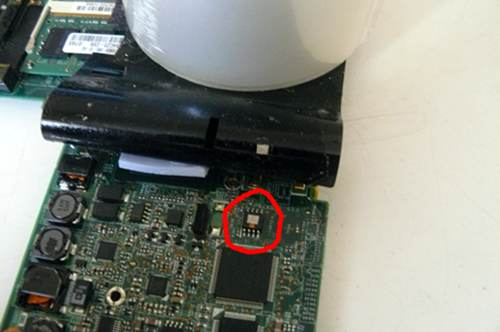
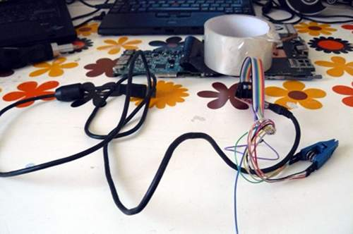
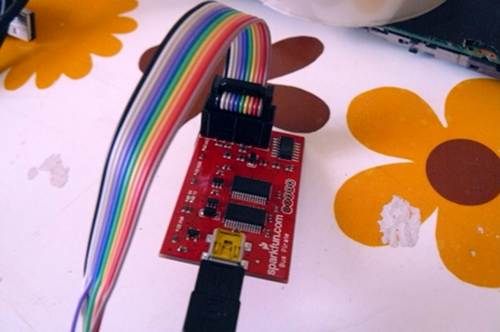
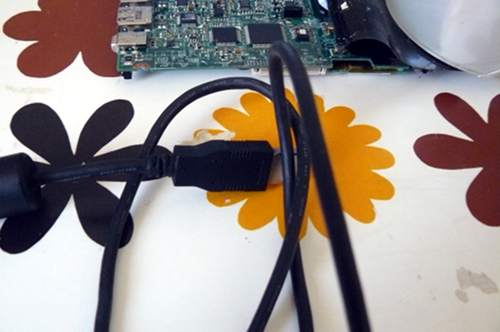
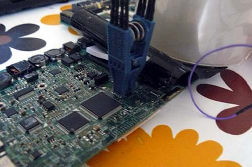
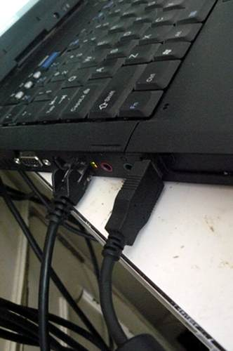
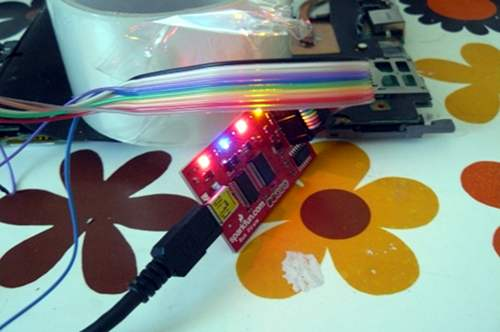

You still have Lenovo BIOS, or you had libreboot running and you flashed another ROM; and you had bucts 1 set and
the ROM wasn't dd'd.* or if Lenovo BIOS was present and libreboot wasn't flashed.
In this case, unbricking is easy: reset BUC.TS to 0 by removing that yellow cmos coin (it's a battery) and putting it back after a minute or two:
*Those dd commands should be applied to all newly compiled X60 ROM's (the ROM's in libreboot binary archives already have this applied!):
dd if=coreboot.rom of=top64k.bin bs=1 skip=$[$(stat -c %s coreboot.rom) - 0x10000] count=64k
dd if=coreboot.rom bs=1 skip=$[$(stat -c %s coreboot.rom) - 0x20000] count=64k | hexdump
dd if=top64k.bin of=coreboot.rom bs=1 seek=$[$(stat -c %s coreboot.rom) - 0x20000] count=64k conv=notrunc
(doing this makes the ROM suitable for use when flashing a machine that still has Lenovo BIOS running,
using those instructions: http://www.coreboot.org/Board:lenovo/x60/Installation.
bad rom (or user error), machine won't boot
In this scenario, you compiled a ROM that had an incorrect configuration, or there is an actual bug preventing your machine from
booting. Or, maybe, you set BUC.TS to 0 and shut down after first flash while Lenovo BIOS was running. In any case, your machine is bricked and will not boot at all.
"Unbricking" means flashing a known-good (working) ROM. The problem: you can't boot the machine, making this difficult. In this situation, external hardware (see hardware requirements above) is needed which can flash the SPI chip (where libreboot resides).
Remove those screws:
Push the keyboard forward (carefully):
Lift the keyboard up and disconnect it from the board:
Grab the right-hand side of the chassis and force it off (gently) and pry up the rest of the chassis:
You should now have this:
Disconnect the wifi antenna cables, the modem cable and the speaker:
Unroute the cables along their path, carefully lifting the tape that holds them in place. Then, disconnect the modem
cable (other end) and power connection and unroute all the cables so that they dangle by the monitor hinge on the right-hand
side:
Disconnect the monitor from the motherboard, and unroute the grey antenna cable, carefully lifting the tape
that holds it into place:
Carefully lift the remaining tape and unroute the left antenna cable so that it is loose:
Remove the screw that is highlighted (do NOT remove the other one; it holds part of the heatsink (other side) into place):
Remove those screws:
Carefully remove the plate, like so:
Remove the SATA connector:
Now remove the motherboard (gently) and cast the lcd/chassis aside:
Lift back that tape and hold it with something. Highlighted is the SPI flash chip:

At this point, you should wire up your programmer according to it's documentation. For me, this was (see: "SparkFun cable pin reference"): http://dangerousprototypes.com/docs/Common_Bus_Pirate_cable_pinouts.
Correlating with the following information, I was able to wire up my pirate correctly: http://flashrom.org/Bus_Pirate#Connections
And by following that advice: http://www.coreboot.org/Board:lenovo/x60/Installation#Howto.
Note: that last page says to wire up only those 5 pins (see below) like that: 1, 2, 4, 5, 6.
Note: and then, for power it says (on that coreboot.org page) to connect the power jack to the board and connect the
AC adapter (without powering on the board).
Note: I ignored that advice, and wired up all 8 pins. And it worked.
Here is the pinout (correlate it with your programmer's documentation):
My programmer, usb cable and clip:

My programmer (bus pirate):

My clip (pomona 5250):
My USB mini a to b cable:

Connecting the pomona:

Connecting the USB cable from programmer to 2nd(working/non-bricked) computer, my T60:

Programmer is now active:

Now I install flashrom on the T60 (running Trisquel GNU/Linux) and do this: flashrom -p buspirate_spi:dev=/dev/ttyUSB0 -w coreboot.rom
Note: this is using buspirate as the programmer, so it is flashing the X60, not the T60!
Here's my terminal window on the T60:
So, you should see the following:
--
flashrom v0.9.5.2-r1517 on Linux 3.2.0-61-generic (i686), built with libpci 3.1.8, GCC 4.6.3, little endian
flashrom is free software, get the source code at http://www.flashrom.org
Calibrating delay loop... delay loop is unreliable, trying to continue OK.
Found Macronix flash chip "MX25L1605" (2048 kB, SPI) on buspirate_spi.
Reading old flash chip contents... done.
Erasing and writing flash chip... Erase/write done.
Verifying flash... VERIFIED.
--
At the end it says "VERIFIED", which means that the procedure worked. If you see this, it means
that you can put your X60 back together. So let's do that now.
Remove the programmer and put it away somewhere. Put back the tape and press firmly over it:
Your empty chassis:
Put the motherboard back in:
Reconnect SATA:
Put the plate back and re-insert those screws:
Re-route that antenna cable around the fan and apply the tape:
Route the cable here and then (not shown, due to error on my part) reconnect the monitor cable to the motherboard
and re-insert the screws:
Re-insert that screw:
Route the black antenna cable like so:
Tuck it in neatly like so:
Route the modem cable like so:
Connect modem cable to board and tuck it in neatly like so:
Route the power connection and connect it to the board like so:
Route the antenna and modem cables neatly like so:
Connect the wifi antenna cables. At the start of the tutorial, this machine had an Intel wifi chip. Here you see I've replaced it with an
Atheros AR5B95 (supports 802.11n and can be used without blobs):
Connect the modem cable:
Connect the speaker:
You should now have this:
Re-connect the upper chassis:
Re-connect the keyboard:
Re-insert the screws that you removed earlier:
Power on!
Trisquel live USB menu (using GRUB's ISOLINUX parser):